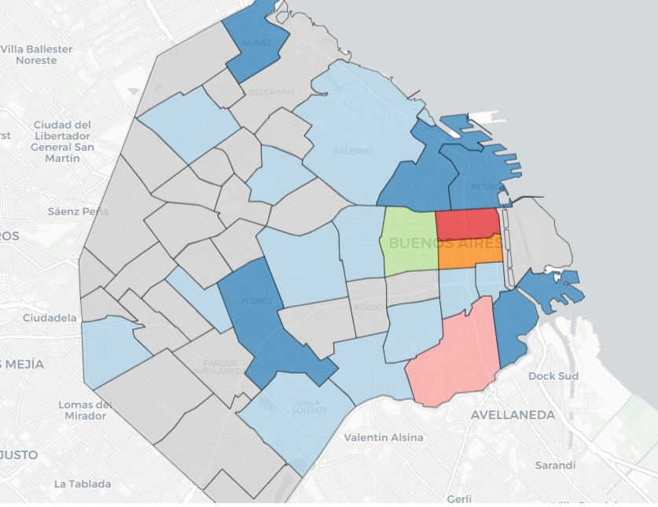
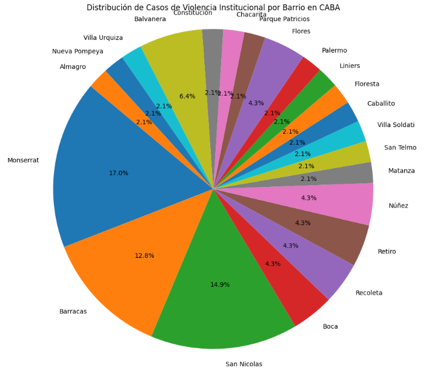
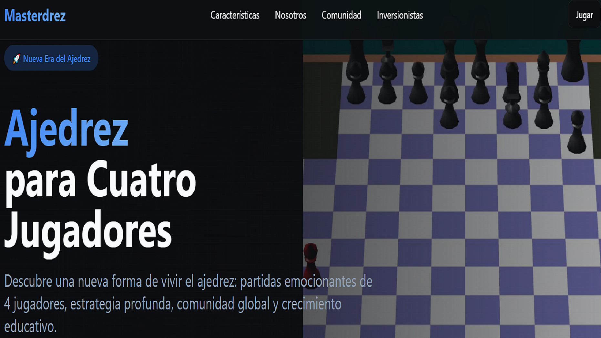
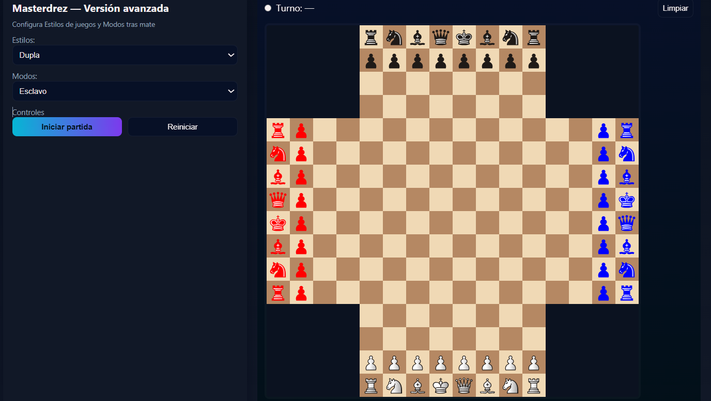
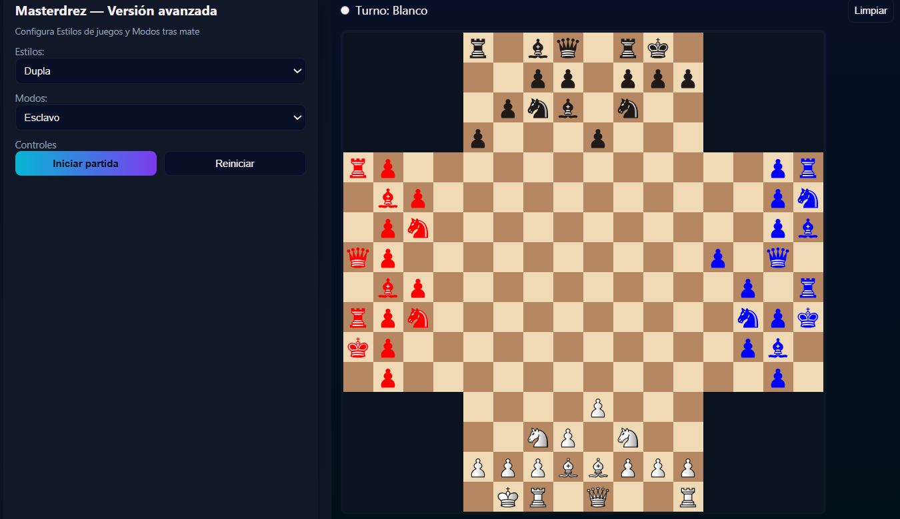
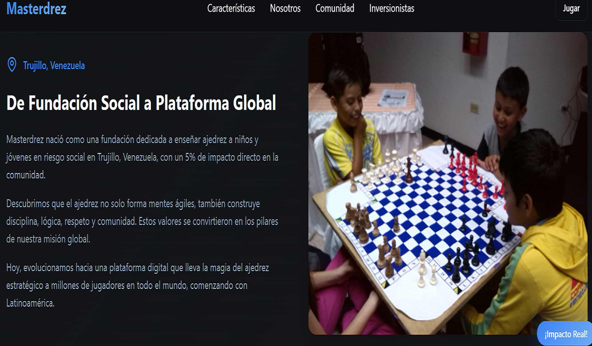
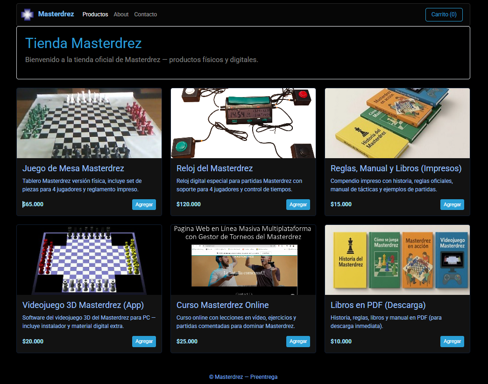
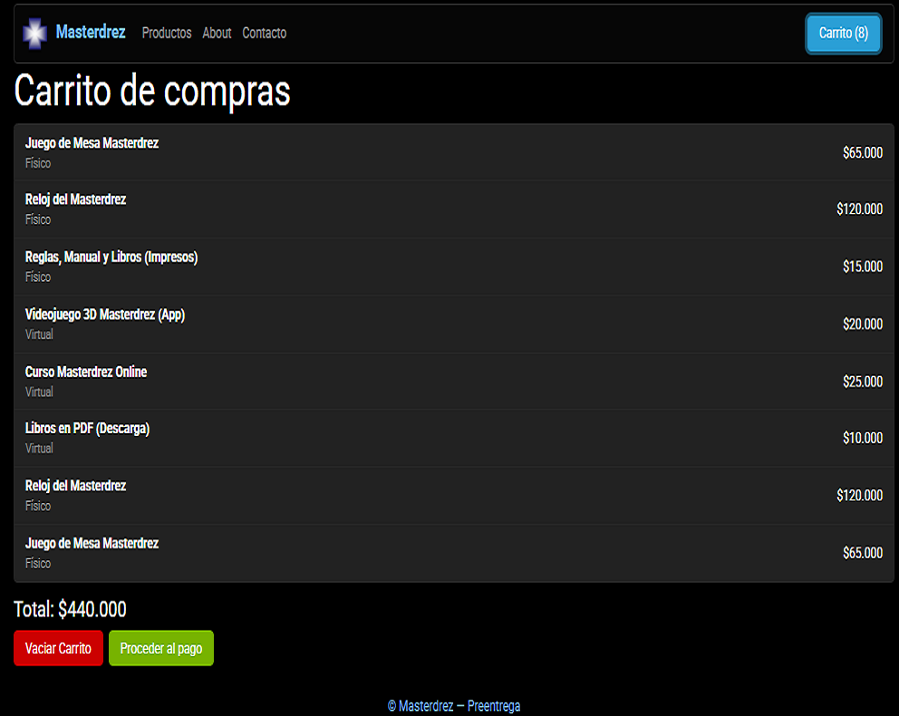

Projects
📊 Data Analysis Project – Police Violence in Buenos Aires
Date: 2025 (Completed)
Role: Data Development Specialist
Technologies:
Python | Pandas | NumPy | Google Colab | Data Visualization | EDA | Statistical Analysis
Description:
Data analysis project focused on exploring and understanding patterns related to police violence
incidents in Buenos Aires. The project includes data cleaning, preprocessing, exploratory data analysis
(EDA), and visualization to extract meaningful insights from real-world datasets.
Key Features:
- Data cleaning and preprocessing using Python (Pandas)
- Handling missing and inconsistent data
- Exploratory Data Analysis (EDA)
- Statistical analysis of incidents
- Data visualization to identify patterns and trends
- Interpretation of results for real-world insights
Visualizations:
Cases by Neighborhood

Police Abuse vs Education Level

Geographic Distribution (CABA Map)

Distribution of Cases

Links:
♟️ Masterdrez – Multiplayer Chess Engine
Date: 2024 (In Progress)
Role: Game Development Specialist
Technologies:
React.js | Chessground.js | Node.js | JavaScript | TypeScript
Description:
Four-player chess engine developed in Unity implementing custom movement logic, attack detection, and rule validation for a complex multiplayer environment. The project focuses on building a scalable and modular game architecture with advanced game logic.
Key Features:
- Custom chess engine for four-player gameplay
- Advanced movement validation system
- Check and attack detection algorithms
- Castling implementation with rule validation
- Turn-based multiplayer logic
- Object-oriented design and modular architecture




Links:
- Masterdrez Website
- Source Code: Private
🛒 Full Stack Web Application – Shopping Cart
Date: 2023 | Completed
Role: Full Stack Developer
Technologies:
React.js | Node.js | MockAPI | Vite | JSON | REST API | JavaScript
Description:
Full stack web application developed for the sale and distribution of Masterdrez. The system implements a complete shopping cart with frontend and backend integration, using a RESTful API architecture and database management.
Key Features:
- Responsive frontend developed with React
- Backend API built with Node.js
- RESTful architecture for client-server communication
- Database integration with MockAPI
- Shopping cart functionality (add, remove, update products)
- Product management and data persistence

Store Interface (Product Catalog)

Shopping Cart System
Links:
Education
PhD Applied Sciences
MSc Applied Informatics
Computer Engineering
Contact
Email: villadifran@gmail.com
Location: Buenos Aires, Argentina